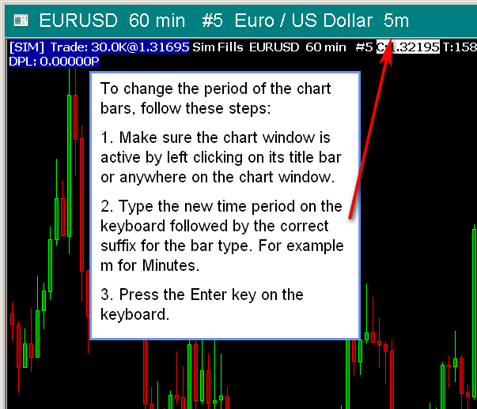

Changing Chart Bars Period
- Introduction
- Fast Changing by Keyboard
- Changing the Period of the Chart Bars Through Control Bar Buttons
- Changing the Period of the Chart Bars Through the Chart Menu
- Changing the Period of the Chart Bars Through Chart Settings
- Changing the Period of Chart Bars Uses Only Local Data File
- Improving Performance of Loading Chart Data
Introduction
Sierra Chart provides numerous ways to change the period of the bars in a chart. You are able to specify any time period per bar that you require.
Fast Changing by Keyboard
{kind=link}
To change the period of the chart bars through the keyboard, make the chart with the bars that you want to change the active chart, if it is not already active, by selecting it with a single left click using the mouse pointer anywhere on the chart window, with a single left click on the title bar of the chart, by selecting it from the chart tabs along the top or bottom of the main window (if displayed), or by selecting it from the Window menu.
Type the new period from the keyboard and press the ENTER key on your keyboard. As you type, the characters will appear in the title area of the window, assuming the title bar is wide enough to see the standard text and the additional characters being typed. The window captures the keys as you press them.
Example: With an Intraday chart, type 10 and press the ENTER key to change the bars to 10 minutes, assuming it is a Minute based chart currently. If it were currently a Range bar chart, then this would change to a 10 Tick Range per bar. With a Historical Daily chart, type 5 and press the ENTER key to change to a 5 Day bar period.
You can also change the Bar Period Type by entering the abbreviation for the Bar Period Type at the end of the period number. This is described in more detail below.
When a chart drawing modification function on the Tools menu, like the Erase Drawing Mode or Move Drawing, is selected, changing the period of the chart bars through the keyboard may not work. To solve this problem, select a different tool like Tools >> Chart Values.
The following are the supported Bar Period Type abbreviations:
- s: Seconds Per Bar
- m: Minutes Per Bar
- h: Hours Per Bar
- t: Trades Per Bar
- v: Volume Per Bar
- r: Range Per Bar (Standard range bars)
- rm: Range Per Bar (New bar on range met)
- rt: Range Per Bar (True range bars)
- rf: Range Per Bar (Fill gaps)
- ro: Range Per Bar (Open = close)
- rmo: Range Per Bar (New bar on range Met and Open = close)
- rv: Reversal Bar
- rk: Renko Bar
- fr: Flex Renko Bar (BoxSize, TrendOffset, RevOffset with a comma, dash, or space delimiting the period components. This abbreviation suffix must always be typed when changing the Flex Renko Bar settings by the keyboard.)
- ar: Aligned Renko
- dv: Delta Volume Per Bar
- pc: Price Changes Per Bar
- d: Days Per Bar
- w: Weeks Per Bar
- mn: Months Per Bar
- q: Quarters Per Bar
- y: Years Per Bar
- fri: Flex Renko Inverse Setting Bar (BarSize, TrendBarOffset, ReversalBarTrigger with a comma, dash, or space delimiting the period components. This abbreviation suffix must always be typed when changing the Flex Renko Inverse Setting Bar settings by the keyboard.)
- pf: Point and Figure (BoxSize, ReversalSize)
- pnf: Point and Figure (BoxSize, ReversalSize)
If the chart is an Intraday chart:
- To switch to Minute based chart bars, type the number of Minutes followed by the letter m (for example: 15m).
- To switch to Seconds based chart bars, type the number of Seconds followed by the letter s (for example: 10s).
- To switch to Number of Trades based chart bars, type the number of Number of Trades per bar followed by the letter t (for example: 100t).
- To switch to Volume based chart bars, type the number of Shares or Contracts per bar followed by the letter v (for example: 100000v).
- To switch to Range based chart bars, type the Range in Ticks followed by the letter r (for example: 4r for 4 Ticks per bar).
- To switch to Reversal based chart bars, type the Reversal Amount, and the Minimum Length followed by the abbreviation rv (for example: 5-10rv, 10,15rv, 5 10rv).
- To switch to Days based chart bars, type the number of Days followed by the letter d (for example: 1d).
- To switch to Flex Renko bars, type the BoxSize, TrendOffset, and RevOffset separated by dashes, followed by the abbreviation fr (for example: 4-2-2fr).
- To switch to Point and Figure bars, type the BoxSize and ReversalSize separated by a dash, followed by the abbreviation pf or pnf (for example: 1-5pf).
It is possible to quickly change the symbol of the chart through the keyboard. Refer to Changing the Symbol of a Chart for instructions.
Changing the Period of the Chart Bars Through Control Bar Buttons
{kind=link}
Select Global Settings >> Customize Control Bar 1-8. In the Customize Control Bar window you can add buttons for common Historical and Intraday bar periods.
These are listed in the Available Control Bar Commands >> Chart Bar Period list. For Historical charts these will be: Daily, Weekly, Monthly, Quarterly, Yearly.
For Intraday charts these will begin with Intraday Bar Period. Once these are added, you can press these buttons directly on the Control Bar.
To make the Control Bar visible if it is not already, select Window >> Control Bars >> Control Bar 1-8.
It is supported to customize 20 Control Bar buttons to set a specific time period per bar for Intraday charts. For complete documentation, refer to Custom Buttons for Intraday Chart Bar Period. Custom Control Bar buttons are also supported for Number of Trades, Volume, Range, Reversal, Renko, Delta Volume, Price Change, Point and Figure Bars.
For complete documentation for the Control Bar, refer to Control Bar.
Changing the Period of the Chart Bars Through the Chart Menu
There are several commands on the Chart >> Bar Periods menu to change the period of chart bars. They are as follows: Daily, Weekly, Monthly, Quarterly, Yearly and many common Intraday chart bar periods
Changing the Period of the Chart Bars Through Chart Settings
You can also change the chart bars period through the Chart Settings window by selecting Chart >> Chart Settings on the Sierra Chart menu. You can set the period with the controls in the Intraday Chart Period or the Historical Chart Period frames. For more information, refer to Chart Settings.
Changing the Period of Chart Bars Uses Only Local Data File
When changing the period/timeframe of chart bars by using any of the methods documented on this page, the chart bars are rebuilt by using data from the chart data file for the symbol held on your local computer.
There is no downloading of historical data from the remote data server which occurs while the chart bars are being rebuilt from the chart data file held on your computer. Downloading of historical data does not occur immediately after the chart bars are built either.
If it appears to be taking a long time reading the data from the local data file, then this could be caused by antivirus/anti-malware software. For more information about this, refer to help topic 30.8.
Improving Performance of Loading Chart Data
When changing the period/timeframe of Intraday chart bars by using any of the methods documented on this page, if the chart takes longer than you want to load, then follow any or all of the below methods to improve performance.
- Reduce the Days to Load setting in the Intraday chart. Refer to Days to Load.
- Avoid changing the time period of the chart bars and instead open separate charts for the different time periods that you want to look at. Refer to Opening Charts.
- Increase the Intraday Data Storage Time Unit setting from 1 Tick to a higher setting.
If you are using Number of Trades, Volume, Range, Reversal, Renko, Delta Volume, Price Change, Point and Figure Bars in your charts, then normally this needs to be set to 1 Tick for 100% precision. For slightly less precision you can use 1 Second. It is not recommended to go to a higher value in the case of when using Number of Trades, Volume, Range, Reversal, Renko, Delta Volume, Price Change, Point and Figure Bars.
In the case of when changing the Intraday Data Storage Time Unit, you need to re-download the data by going to an Intraday chart for each symbol and select Edit >> Delete All Data and Download. You will need to do this once for each symbol and not each chart. This will cause the data in the Intraday chart data files to be replaced with the higher timeframe per record. - If you do not want to increase the Intraday Data Storage Time Unit setting because you require that more detailed precision for charts which use Number of Trades, Volume, Range, Reversal, Renko, Delta Volume, Price Change, Point and Figure Bars, then for charts which do not require the lower Intraday Data Storage Time Unit, run a New Instance of Sierra Chart and open those charts in that instance.
In that instance, increase the Intraday Data Storage Time Unit for better performance for the charts running in that sub instance. We recommend using 10 Seconds, 30 Seconds, or 1 Minute.
In the case of chart bars which are only based upon 1 Minute time frames, use 1 Minute for the Intraday Data Storage Time Unit. This will massively reduce the time to load Intraday charts and make them nearly instantaneous.
For more details, refer to Intraday Data Storage Time Unit. Historical Data Record Time Frame.
*Last modified Monday, 10th April, 2023.